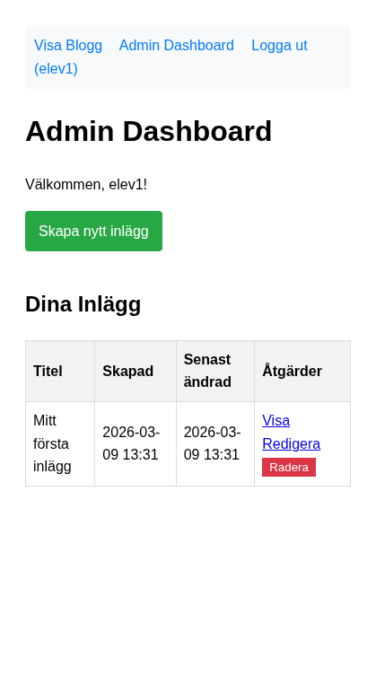
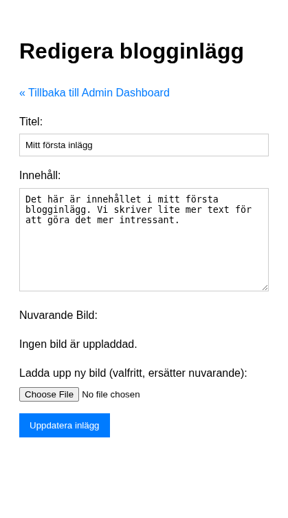

Del 4: Uppdatera och radera
I denna del implementerar vi redigering, radering och admin-panelen – steg för steg. Förutsättning: Du har genomfört Del 3: Skapa och läsa inlägg.
Vi börjar med admin-panelen så att du har någonstans att navigera, sedan redigering (först utan bildhantering), sedan radering.
Steg 1: Adminpanel – grundversion
Admin-panelen är den sida inloggade användare når efter inloggning. Den ska lista användarens inlägg och ge länkar till att skapa, redigera och radera.
Steg 1.1: Hämta användarens inlägg
Uppdatera admin/index.php (som du skapade minimalt i Del 2) med följande logik:
<?php
require_once '../includes/config.php';
if (!isset($_SESSION['user_id'])) {
header('Location: ../login.php?redirect=' . urlencode($_SERVER['REQUEST_URI']));
exit;
}
$logged_in_user_id = $_SESSION['user_id'];
$logged_in_username = $_SESSION['username'];
require_once '../includes/database.php';
require_once '../includes/Post.php';
$posts = [];
$fetch_error = null;
$success_message = null;
$post_model = new Post(connect_db());
if (isset($_GET['created']) && $_GET['created'] === 'success') {
$success_message = "Nytt inlägg skapat!";
} elseif (isset($_GET['updated']) && $_GET['updated'] === 'success') {
$success_message = "Inlägg uppdaterat!";
} elseif (isset($_GET['deleted']) && $_GET['deleted'] === 'success') {
$success_message = "Inlägg raderat!";
}
try {
$posts = $post_model->showAllByUser($logged_in_user_id);
} catch (PDOException $e) {
error_log("Admin Index Error: " . $e->getMessage());
$fetch_error = "Kunde inte hämta dina blogginlägg just nu.";
}
?>
Nytt i detta steg: WHERE user_id = :user_id – varje användare ser bara sina egna inlägg.
Steg 1.2: Visa listan med länkar
Lägg till HTML-delen med navigering, länk till “Skapa nytt inlägg” och tabell:
<!DOCTYPE html>
<html lang="sv">
<head>
<meta charset="UTF-8">
<meta name="viewport" content="width=device-width, initial-scale=1.0">
<title>Admin Dashboard - Enkel Blogg</title>
<style>
body { font-family: sans-serif; line-height: 1.6; padding: 20px; }
table { width: 100%; border-collapse: collapse; margin-top: 20px; }
th, td { border: 1px solid #ddd; padding: 8px; text-align: left; }
th { background-color: #f2f2f2; }
nav { margin-bottom: 20px; background-color: #f8f9fa; padding: 10px; border-radius: 5px; }
nav a { margin-right: 15px; text-decoration: none; color: #007bff; }
.create-link { display: inline-block; margin-bottom: 20px; background-color: #28a745; color: white; padding: 10px 15px; text-decoration: none; border-radius: 4px; }
.create-link:hover { background-color: #218838; }
.error-message { color: red; border: 1px solid red; padding: 10px; margin-bottom: 20px; }
.success-message { color: green; border: 1px solid green; padding: 10px; margin-bottom: 20px; }
</style>
</head>
<body>
<nav>
<a href="../index.php">Visa Blogg</a>
<a href="index.php">Admin Dashboard</a>
<a href="../logout.php">Logga ut (<?php echo htmlspecialchars($logged_in_username); ?>)</a>
</nav>
<h1>Admin Dashboard</h1>
<p>Välkommen, <?php echo htmlspecialchars($logged_in_username); ?>!</p>
<a href="create_post.php" class="create-link">Skapa nytt inlägg</a>
<?php if ($success_message): ?>
<p class="success-message"><?php echo htmlspecialchars($success_message); ?></p>
<?php endif; ?>
<?php if ($fetch_error): ?>
<p class="error-message"><?php echo htmlspecialchars($fetch_error); ?></p>
<?php elseif (empty($posts)): ?>
<p>Du har inte skapat några inlägg ännu.</p>
<?php else: ?>
<h2>Dina Inlägg</h2>
<table>
<thead>
<tr>
<th>Titel</th>
<th>Skapad</th>
<th>Senast ändrad</th>
<th>Åtgärder</th>
</tr>
</thead>
<tbody>
<?php foreach ($posts as $post): ?>
<tr>
<td><?php echo htmlspecialchars($post['title']); ?></td>
<td><?php echo date('Y-m-d H:i', strtotime($post['created_at'])); ?></td>
<td><?php echo date('Y-m-d H:i', strtotime($post['updated_at'])); ?></td>
<td>
<a href="../post.php?id=<?php echo $post['id']; ?>" target="_blank">Visa</a>
<a href="edit_post.php?id=<?php echo $post['id']; ?>">Redigera</a>
<!-- Radera-knapp kommer i steg 4 -->
</td>
</tr>
<?php endforeach; ?>
</tbody>
</table>
<?php endif; ?>
</body>
</html>
Nu har du en fungerande admin-panel. “Redigera”-länken pekar på edit_post.php som vi skapar nästa.

Steg 2: Redigera inlägg – utan bildhantering
Redigering kräver två saker: hämta befintlig data (GET) och spara ändringar (POST). Vi börjar utan bildhantering.
Steg 2.1: Hämta inlägget och kontrollera ägarskap
Försök själv: Varför måste vi kolla att $post['user_id'] matchar $logged_in_user_id? Vad skulle hända om vi inte gjorde det?
Skapa admin/edit_post.php:
<?php
require_once '../includes/config.php';
if (!isset($_SESSION['user_id'])) {
header('Location: ../login.php?redirect=' . urlencode($_SERVER['REQUEST_URI']));
exit;
}
$logged_in_user_id = $_SESSION['user_id'];
require_once '../includes/database.php';
require_once '../includes/Post.php';
$errors = [];
$post_id = filter_input(INPUT_GET, 'id', FILTER_VALIDATE_INT);
$post = null;
$title = '';
$body = '';
$current_image_path = null;
if ($post_id === false || $post_id <= 0) {
$errors[] = "Ogiltigt inläggs-ID.";
} else {
try {
$post_model = new Post(connect_db());
$post = $post_model->showOne($post_id);
if (!$post) {
$errors[] = "Inlägget hittades inte.";
} elseif ($post['user_id'] != $logged_in_user_id) {
$errors[] = "Du har inte behörighet att redigera detta inlägg.";
$post = null;
} else {
$title = $post['title'];
$body = $post['body'];
$current_image_path = $post['image_path'];
}
} catch (PDOException $e) {
error_log("Edit Post Fetch Error: " . $e->getMessage());
$errors[] = 'Databasfel. Kan inte hämta inlägg för redigering.';
$post = null;
}
}
?>
Viktigt: user_id-kontrollen förhindrar att användare redigerar andras inlägg genom att ändra ID:t i URL:en.
Steg 2.2: Hantera POST (uppdatering utan bild)
Lägg till detta efter hämtningen och före ?>:
if ($_SERVER['REQUEST_METHOD'] === 'POST' && $post) {
$title = trim($_POST['title'] ?? '');
$body = trim($_POST['body'] ?? '');
$new_image_path = $current_image_path; // Behåll befintlig bild tills vidare
if (empty($title)) {
$errors[] = 'Titel är obligatoriskt.';
}
if (empty($body)) {
$errors[] = 'Innehåll är obligatoriskt.';
}
if (empty($errors)) {
try {
$post_model = new Post(connect_db());
if ($post_model->updateOne($post_id, $logged_in_user_id, $title, $body, $new_image_path)) {
header('Location: index.php?updated=success&id=' . $post_id);
exit;
} else {
$errors[] = 'Ett fel uppstod när inlägget skulle uppdateras.';
}
} catch (PDOException $e) {
error_log("Update Post Error: " . $e->getMessage());
$errors[] = 'Databasfel. Kan inte uppdatera inlägg just nu.';
}
}
}
Nytt i detta steg: UPDATE med WHERE id = :id AND user_id = :user_id – dubbelkollar ägarskap i databasen.
Steg 2.3: Formuläret
Lägg till HTML-delen (formuläret visas bara om $post finns):
<!DOCTYPE html>
<html lang="sv">
<head>
<meta charset="UTF-8">
<meta name="viewport" content="width=device-width, initial-scale=1.0">
<title>Redigera inlägg - Admin</title>
<style>
body { font-family: sans-serif; line-height: 1.6; padding: 20px; }
.form-group { margin-bottom: 15px; }
label { display: block; margin-bottom: 5px; }
input[type="text"], textarea {
width: 100%; padding: 8px; border: 1px solid #ccc; box-sizing: border-box;
}
textarea { min-height: 150px; }
button { padding: 10px 15px; background-color: #007bff; color: white; border: none; cursor: pointer; }
.error-messages { color: red; margin-bottom: 15px; }
.error-messages ul { list-style: none; padding: 0; }
a { color: #007bff; text-decoration: none; }
</style>
</head>
<body>
<h1>Redigera blogginlägg</h1>
<p><a href="index.php">« Tillbaka till Admin Dashboard</a></p>
<?php if (!empty($errors)): ?>
<div class="error-messages">
<strong>Inlägget kunde inte uppdateras:</strong>
<ul>
<?php foreach ($errors as $error): ?>
<li><?php echo htmlspecialchars($error); ?></li>
<?php endforeach; ?>
</ul>
</div>
<?php endif; ?>
<?php if ($post): ?>
<form action="edit_post.php?id=<?php echo $post_id; ?>" method="post">
<div class="form-group">
<label for="title">Titel:</label>
<input type="text" id="title" name="title" value="<?php echo htmlspecialchars($title); ?>" required>
</div>
<div class="form-group">
<label for="body">Innehåll:</label>
<textarea id="body" name="body" required><?php echo htmlspecialchars($body); ?></textarea>
</div>
<button type="submit">Uppdatera inlägg</button>
</form>
<?php endif; ?>
</body>
</html>
OBS: Formulärets action inkluderar ?id=<?php echo $post_id; ?> så att vi vet vilket inlägg som uppdateras vid POST.

Testa att redigera ett inlägg. Titeln och innehållet ska uppdateras.
Steg 3: Redigering – lägg till bildhantering
Nu lägger vi till möjlighet att ta bort eller ersätta bilden. Vi bryter upp i tre understeg så att varje del blir lättare att följa.
Steg 3.1: Visa nuvarande bild och checkbox “Ta bort”
Börja med att uppdatera formuläret. Ändra <form> till att använda enctype="multipart/form-data" och lägg till bildsektionen före submit-knappen:
<form action="edit_post.php?id=<?php echo $post_id; ?>" method="post" enctype="multipart/form-data">
<!-- ... titel och body ... -->
<div class="form-group">
<label>Nuvarande Bild:</label>
<?php if ($current_image_path): ?>
<div style="margin: 10px 0;">
<img src="<?php echo htmlspecialchars(BASE_URL . '/' . $current_image_path); ?>" alt="Nuvarande bild" style="max-width: 200px;">
</div>
<label><input type="checkbox" name="delete_image" value="1"> Ta bort nuvarande bild</label>
<?php else: ?>
<p>Ingen bild är uppladdad.</p>
<?php endif; ?>
</div>
<button type="submit">Uppdatera inlägg</button>
</form>
Lägg till hantering av “Ta bort bild” i POST-blocket. Ersätt raden $new_image_path = $current_image_path; med:
$delete_image = isset($_POST['delete_image']);
$new_image_path = $current_image_path;
$image_uploaded = false; // Används vid städning om databasen misslyckas (steg 3.3)
if ($delete_image && $current_image_path) {
if (file_exists(UPLOAD_PATH . basename($current_image_path))) {
unlink(UPLOAD_PATH . basename($current_image_path));
}
$new_image_path = null;
$current_image_path = null;
}
Testa: redigera ett inlägg med bild och kryssa i “Ta bort nuvarande bild”. Inlägget ska uppdateras utan bild.
Steg 3.2: Ladda upp ny bild (ersätter nuvarande)
Lägg till filfältet i formuläret, före submit-knappen:
<div class="form-group">
<label for="image">Ladda upp ny bild (valfritt, ersätter nuvarande):</label>
<input type="file" id="image" name="image" accept="image/jpeg, image/png, image/gif">
</div>
Lägg till hantering av ny uppladdning i POST-blocket, efter if ($delete_image ...)-blocket men före if (empty($errors)):
} elseif ($image && $image['error'] === UPLOAD_ERR_OK) {
$allowed_types = ['image/jpeg', 'image/png', 'image/gif'];
$max_size = 5 * 1024 * 1024;
if (!in_array($image['type'], $allowed_types)) {
$errors[] = 'Ogiltig filtyp. Endast JPG, PNG och GIF.';
} elseif ($image['size'] > $max_size) {
$errors[] = 'Filen är för stor. Max 5 MB.';
} else {
$file_extension = pathinfo($image['name'], PATHINFO_EXTENSION);
$unique_filename = uniqid('post_img_', true) . '.' . $file_extension;
$destination = UPLOAD_PATH . $unique_filename;
if (move_uploaded_file($image['tmp_name'], $destination)) {
if ($current_image_path && file_exists(UPLOAD_PATH . basename($current_image_path))) {
unlink(UPLOAD_PATH . basename($current_image_path));
}
$new_image_path = 'uploads/' . $unique_filename;
$image_uploaded = true; // Behövs för städning vid databasfel (steg 3.3)
} else {
$errors[] = 'Kunde inte ladda upp den nya bilden.';
}
}
}
OBS: Lägg till $image = $_FILES['image'] ?? null; i början av POST-blocket. Variabeln $image_uploaded sattes redan i steg 3.1.
Testa att ladda upp en ny bild – den ska ersätta den gamla.
Steg 3.3: Städa upp vid databasfel
Om $stmt->execute() eller databasen misslyckas efter att vi redan flyttat en ny bild till uploads/, måste vi ta bort den filen. Annars blir det kvar “förlorade” filer. Lägg till variabeln $image_uploaded = true när en ny bild sparas, och i else-grenarna (där vi sätter $errors[]) efter $stmt->execute():
if ($image_uploaded && $new_image_path && file_exists(UPLOAD_PATH . basename($new_image_path))) {
unlink(UPLOAD_PATH . basename($new_image_path));
}
Hela POST-blocket med alla tre delar sammansatt:
if ($_SERVER['REQUEST_METHOD'] === 'POST' && $post) {
$title = trim($_POST['title'] ?? '');
$body = trim($_POST['body'] ?? '');
$image = $_FILES['image'] ?? null;
$delete_image = isset($_POST['delete_image']);
$new_image_path = $current_image_path;
$image_uploaded = false;
if (empty($title)) {
$errors[] = 'Titel är obligatoriskt.';
}
if (empty($body)) {
$errors[] = 'Innehåll är obligatoriskt.';
}
if ($delete_image) {
if ($current_image_path && file_exists(UPLOAD_PATH . basename($current_image_path))) {
unlink(UPLOAD_PATH . basename($current_image_path));
}
$new_image_path = null;
$current_image_path = null;
} elseif ($image && $image['error'] === UPLOAD_ERR_OK) {
$allowed_types = ['image/jpeg', 'image/png', 'image/gif'];
$max_size = 5 * 1024 * 1024;
if (!in_array($image['type'], $allowed_types)) {
$errors[] = 'Ogiltig filtyp. Endast JPG, PNG och GIF.';
} elseif ($image['size'] > $max_size) {
$errors[] = 'Filen är för stor. Max 5 MB.';
} else {
$file_extension = pathinfo($image['name'], PATHINFO_EXTENSION);
$unique_filename = uniqid('post_img_', true) . '.' . $file_extension;
$destination = UPLOAD_PATH . $unique_filename;
if (move_uploaded_file($image['tmp_name'], $destination)) {
if ($current_image_path && file_exists(UPLOAD_PATH . basename($current_image_path))) {
unlink(UPLOAD_PATH . basename($current_image_path));
}
$new_image_path = 'uploads/' . $unique_filename;
$image_uploaded = true;
} else {
$errors[] = 'Kunde inte ladda upp den nya bilden.';
}
}
}
if (empty($errors)) {
try {
$post_model = new Post(connect_db());
if ($post_model->updateOne($post_id, $logged_in_user_id, $title, $body, $new_image_path)) {
header('Location: index.php?updated=success&id=' . $post_id);
exit;
} else {
$errors[] = 'Ett fel uppstod när inlägget skulle uppdateras.';
if ($image_uploaded && $new_image_path && file_exists(UPLOAD_PATH . basename($new_image_path))) {
unlink(UPLOAD_PATH . basename($new_image_path));
}
}
} catch (PDOException $e) {
error_log("Update Post Error: " . $e->getMessage());
$errors[] = 'Databasfel. Kan inte uppdatera inlägg just nu.';
if ($image_uploaded && $new_image_path && file_exists(UPLOAD_PATH . basename($new_image_path))) {
unlink(UPLOAD_PATH . basename($new_image_path));
}
}
}
}
Du har nu lärt dig: Att hantera tre fall – behålla bild, ta bort bild, ersätta bild – och att städa upp filer om databasen misslyckas.
Steg 4: Radera inlägg
Radering ska ske via POST, inte GET. En GET-länk kan triggas av t.ex. en prefetch eller en felaktig klick, vilket kan leda till oavsiktlig radering.
Steg 4.1: Skapa delete_post.php
Skapa admin/delete_post.php:
<?php
require_once '../includes/config.php';
if (!isset($_SESSION['user_id'])) {
header('Location: ../login.php');
exit;
}
$logged_in_user_id = $_SESSION['user_id'];
require_once '../includes/database.php';
require_once '../includes/Post.php';
$errors = [];
if ($_SERVER['REQUEST_METHOD'] === 'POST') {
$post_id = filter_input(INPUT_POST, 'post_id', FILTER_VALIDATE_INT);
if ($post_id === false || $post_id <= 0) {
$errors[] = "Ogiltigt inläggs-ID.";
} else {
try {
$pdo = connect_db();
$post_model = new Post($pdo);
$post_data = $post_model->showOne($post_id);
if (!$post_data) {
$errors[] = "Inlägget hittades inte.";
} elseif ($post_data['user_id'] != $logged_in_user_id) {
$errors[] = "Du har inte behörighet att radera detta inlägg.";
} else {
if ($post_model->deleteOne($post_id, $logged_in_user_id)) {
$image_to_delete = $post_data['image_path'];
if ($image_to_delete && file_exists(UPLOAD_PATH . basename($image_to_delete))) {
unlink(UPLOAD_PATH . basename($image_to_delete));
}
header('Location: index.php?deleted=success&id=' . $post_id);
exit;
} else {
$errors[] = "Kunde inte radera inlägget.";
}
}
} catch (PDOException $e) {
error_log("Delete Post Error: " . $e->getMessage());
$errors[] = 'Databasfel. Kan inte radera inlägg just nu.';
}
}
} else {
$errors[] = "Ogiltig förfrågan. Radering kräver POST.";
}
?>
<!DOCTYPE html>
<html lang="sv">
<head>
<meta charset="UTF-8">
<title>Fel vid radering - Admin</title>
<style>
body { font-family: sans-serif; line-height: 1.6; padding: 20px; }
.error-messages { color: red; border: 1px solid red; padding: 10px; margin-bottom: 15px; }
.error-messages ul { list-style: none; padding: 0; }
a { color: #007bff; text-decoration: none; }
</style>
</head>
<body>
<h1>Fel vid radering</h1>
<?php if (!empty($errors)): ?>
<div class="error-messages">
<ul>
<?php foreach ($errors as $error): ?>
<li><?php echo htmlspecialchars($error); ?></li>
<?php endforeach; ?>
</ul>
</div>
<?php endif; ?>
<p><a href="index.php">« Tillbaka till Admin Dashboard</a></p>
</body>
</html>
Viktigt: Vi hämtar image_path innan radering, eftersom vi behöver veta vilken fil som ska tas bort. Efter DELETE finns inte raden kvar.
Steg 4.2: Radera-knapp i admin-panelen
I admin/index.php, ersätt kommentaren <!-- Radera-knapp kommer i steg 4 --> med ett formulär:
<form action="delete_post.php" method="post" style="display: inline;"
onsubmit="return confirm('Är du säker på att du vill radera detta inlägg?');">
<input type="hidden" name="post_id" value="<?php echo $post['id']; ?>">
<button type="submit" style="background-color: #dc3545; color: white; border: none; padding: 3px 8px; cursor: pointer;">Radera</button>
</form>
confirm() visar en dialog innan formuläret skickas. För titlar med citationstecken kan du använda htmlspecialchars($post['title'], ENT_QUOTES, 'UTF-8') i bekräftelsetexten om du vill visa titeln.

Du har nu lärt dig: Att använda POST för destruktiva operationer, att radera relaterade filer vid radering av databasrad, och att använda confirm() för att undvika misstag.
Nu har du en fungerande bloggapplikation med CRUD, autentisering, sessioner och bildhantering.
Föregående: Del 3: Skapa och läsa inlägg | Nästa: Del 5: Refaktorering